1과목: 가스유체역학
1. 펌프의 전효율 η를 구하는 식은? (단, ηm은 기계효율, ηv는 체적효율, ηh는 수력효율이다.)
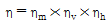
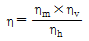
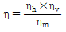
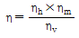
2. 질량 M, 길이 L, 시간 T로 압력의 차원을 나타낼 때 옳은 것은?
3. 비중 0.9인 유체를 10ton/h의 속도로 20m 높이의 저장 탱크에 수송한다. 지름이 일정한 관을 사용할 때 펌프가 유체에 가해준 일은 몇 ㎏f·m/㎏인가? (단, 마찰손실은 무시한다.)
4. 두 평판 사이에 유체가 있을 때 이동 평판을 일정한 속도 u로 운동시키는데 필요한 힘 F에 대한 설명으로 틀린 것은?
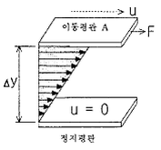
5. 유효흡입수두(NPSH, net positive suction head)를 옳게 나타낸 것은?
6. 원관 내 유체의 흐름에 대한 설명 중 틀린 것은?
7. 등엔트로피 과정하에서 완전기체 중의 음속을 옳게 나타낸 것은? (단, E는 체적탄성계수, R은 기체상수, T는 기체의 절대온도, P는 압력, k는 비열비이다.)
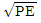
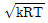
8. 어느 저수지의 표고가 50m이고, 양수발전을 위하여 표고 100m인 지점으로 초당 2m3의 물을 수송하고자할 때 필요한 펌프의 동력은 몇 PS인가? (단, 펌프의 출구와 입구의 관지름은 같고, 전손실 수두는 10m이다.)
9. 20℃ 건조공기의 점성계수는 1.848×10-6㎏f·s/m2이다. 동점성계수를 구하면 약 몇 stokes인가? (단, 공기의 비중량은 1.2㎏f/m3이다.)
10. 제트기가 720km/h의 속도로 비행하고 있다. 이 제트기는 초당 100㎏의 공기를 흡입하여 240m/s의 속도로 배출을 시킨다. 이 제트기의 추진력은 몇 N 인가? (단, 연료의 무게는 무시한다.)
11. 수평으로 놓인 원관 속에서 유체가 흐를 때 층류 영역에서 마찰계수와 레이놀드수와의 함수 관계는?
12. 다음 중 Mach 수를 의미하는 것은?
13. 안지름이 10㎝인 원관을 통해 1시간에 10m3의 물을 수송하려고 한다. 이때 물의 평균유속은 약 몇 m/s이어야 하는가?
14. 수평 원관 내에서의 유체흐름을 설명하는 Hagen-Poiseuille 식을 얻기 위해 필요한 가정이 아닌 것은?
15. 15℃인 공기 속을 비행하는 물체의 마하각이 20°이면 물체의 속도는 약 몇 m/s인가? (단, 공기의 기체상수 R은 287J/㎏·K, 공기의 비열비는 1.4이다.)
16. 왕복 펌프에 비해 소형이며 구조가 간단하고 맥동이 적으나 공기 바인딩 현상이 나타날 수 있는 펌프는?
17. 완전기체에 대한 설명으로 옳은 것은?
18. 실제유체나 이상유체에 관계없이 모두 적용하는 것은?
19. 노점(dew point)에 대한 설명으로 틀린 것은?
20. 원심 펌프에서 발생하는 공동현상(Cavitation)에 대한 설명으로 옳은 것은?
2과목: 연소공학
21. 열화학반응 시 온도변화의 열전도 범위에 비해 속도변화의 전도 범위가 크다는 것을 나타내는 무차원수는?
22. 기체연료의 연소속도에 대한 설명으로 틀린 것은?
23. 조성이 C6H10O5인 어떤 물질 1.0kmol을 완전연소시킬 때 연소가스 중의 질소의 양은 약 몇 ㎏인가? (단, 공기 중의 산소는 23w%, 질소는 77w%이다.)
24. 고온으로 가열된 코크스에 수증기를 작용시켜서 얻는 CO 와 H2가 주성분인 가스는?
25. 연소범위에 대한 일반적인 설명으로 틀린 것은?
26. 에탄 5Nm3을 완전연소시킬 때 필요한 이론공기량 중 N2의 양은 약 몇 Nm3인가?
27. 어떤 연료를 분석한 결과 중량으로 탄소 75%, 수소 15%, 산소 8%, 황 2%이었다. 이 연료의 완전연소에 소요되는 이론산소량은 약 몇 ㎏-O2/㎏-연료 인가?
28. 다음 [보기]는 가스의 화재 중 어떤 화재에 해당하는가?
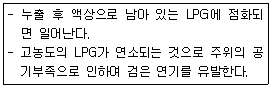
29. 최소착화에너지(MIE)의 특징에 대한 설명으로 옳은 것은?
30. 다음 Otto cycle의 선도에서 열이 공급되는 과정은?
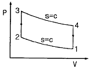
31. 과잉공기량이 지나치게 많을 때 나타나는 현상으로 틀린 것은?
32. 폭발등급은 안전간격에 따라 구분한다. 다음 중 안전간격이 가장 넓은 것은?
33. 다음 중 폭발방호(Explosion Protection)의 대책이 아닌 것은?
34. 이상기체의 성질에 대한 설명으로 틀린 것은?
35. 불활성화 방법 중 용기의 한 개구부로 불활성가스를 주입하고 다른 개구부로부터 대기 또는 스크레버로 혼합가스를 축출하는 퍼지방법은?
36. 액체 연료에 대한 시험항목 및 그 방법의 연결이 틀린 것은?
37. 임계점에 대한 설명으로 가장 옳은 것은?
38. 달톤(Dalton)의 분압법칙에 대하여 옳게 표현한 것은?
39. 체적이 0.5m3인 용기에 분자량이 24인 이상기체 10㎏이 들어있다. 이때의 온도가 25℃라 할 때 압력은 약 몇 kPa인가?
40. C : 87%, H2 : 10%, S : 3%의 조성을 갖는 중유가 이론공기로 완전연소할 때 생성되는 CO2의 양은 약 몇 %인가? (단, 공기 중 산소의 농도는 21v%이다.)
3과목: 가스설비
41. 가스의 호환성 측정을 위하여 사용되는 웨베지수의 계산식을 옳게 나타낸 것은? (단, Wl는 웨베지수, Hg는 가스의 총발열량[kcal/m3], d는 가스의 비중이다.)
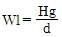
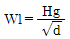
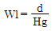
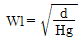
42. 0℃, 101.325kPa의 압력에서 건조한 도시가스 1m3 당 황화수소는 몇 g을 초과할 수 없는가?
43. 펌프의 유량 Q[m3/min], 전양정 H[m], 액체의 비중량이 γ[㎏/m3]일 때 펌프의 수동력 Lw[PS]를 구하는 식은?
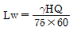
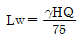
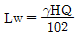
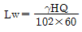
44. LP가스의 일반적 특성에 대한 설명으로 틀린 것은?
45. LP가스 충전설비 중 압축기를 이용하는 방법의 특징이 아닌 것은?
46. 스테인리스강을 조직학적으로 구분하였을 때 이에 속하지 않는 것은?
47. 공기액화분리장치에서 복정류탑의 중간에 있는 응축기의 작용은?
48. 다음 [그림]은 가정용 LP가스 소비시설이다. R1에 사용되는 조정기의 종류는?
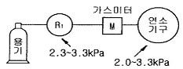
49. 나프타의 사이클릭(cyclic)식 접촉분해법에서 주로 사용되는 촉매는?
50. 발열량이 5000kcal/Nm3, 비중이 0.61, 공급표준압력이 100㎜H2O인 가스에서 발열량 11000kcal/Nm3, 비중 0.66 공급표준압력이 200㎜H2O인 LNG로 변경할 경우 노즐 변경율은 얼마인가?
51. 차단성능이 좋고 유량조정이 용이하나 압력손실이 커서 고압의 대구경 밸브에는 부적당한 밸브는?
52. 내용적이 48m3인 LPG저장탱크에 부탄 18톤을 충전한다면 저장탱크 내의 액체 부탄의 용적은 상용의 온도에서 저장탱크 내용적의 약 몇 %가 되겠는가? (단, 저장탱크의 상온온도에 있어서의 액체 부탄의 비중은 0.55로 한다.)
53. 부피가 50L인 용기에 산소가스가 150atm으로 충전되어 있다면 충전된 가스의 질량은 약 몇 ㎏인가? (단, 온도는 0℃이다.)
54. 다음 [그림]과 같은 공기액화분리장치는 무엇인가?
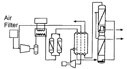
55. 나프타(naphtha)의 접촉분해(수증기 개질)의 원리에 대한 설명으로 틀린 것은?
56. 카르노사이클이 27℃ 와 -23℃에서 작동될 때 냉동기의 성적계수(ɛR), 열펌프의 성적계수(ɛH)를 각각 구하면?
57. “철근콘크리트제 방호벽 설치 시 방호벽은 직경 ( )㎜ 이상의 철근을 가로, 세로 ( )㎜ 이하의 간격으로 배근 하여야 한다.” 다음 중 빈칸에 들어갈 알맞은 수치는?
58. 가스 액화사이클에 대한 설명으로 틀린 것은?
59. “직류전철이 주행할 때에 누출전류에 의해서 지하 매몰배관에는 전류의 유입지역과 유출지역이 생기며, 이때 ( ⓐ )은(는) 부식이 된다. 이러한 지역은 전철의 운행상태에 따라 계속 변할 수 있으므로 이에 대응하기 위하여 ( ⓑ )의 전기방식을 선정한다.” 다음 중 ( )안에 들어갈 적당한 용어는?
60. 펌프에서 발생되는 베이퍼록의 방지방법이 아닌 것은?
4과목: 가스안전관리
61. 공정에 존재하는 위험요소들과 공정의 효율을 떨어뜨릴 수 있는 운전상의 문제점을 찾아낼 수 있는 정성적인 위험평가 기법으로 산업체(화학공장)에서 일반적으로 사용되는 것은?
62. 도시가스용 폴리에틸렌 배관이 도로에 매설되어 있다. 기밀시험 실시시기의 기준으로 옳은 것은?
63. 최고 충전압력 5MPa, 내경 60㎝의 용접제 원통형 고압설비의 동판의 두께는 최소 몇 ㎜가 되어야 하는가? (단, 재료의 허용응력(S)은 150N/mm2, 용접효율은 0.75, 부식여유는 1㎜로 한다.)
64. 부피 함량이 각각 C3H8 20%, H2 30%, CH4 50% 혼합가스의 폭발하한계 값은 약 몇 %인가? (단, 폭발하한계는 각각 C3H8 2.4%, H2 4.0%, CH4 5.0%이다.)
65. 압축가스 100m3 충전용기를 차량에 적재하여 운반할 때 휴대하여야 할 소화설비의 기준으로 옳은 것은?
66. 가스안전관리전문기관이 가스사고를 방지하기 위하여 장비와 기술을 이용하여 가스공급시설의 잠재된 위험요소와 원인을 찾아내는 것을 무엇이라 하는가?
67. 차량에 고정된 탱크가 후부취출식 탱크인 경우에는 탱크주밸브 및 긴급차단장치에 속하는 밸브와 차량의 뒷범퍼와의 수평거리를 몇 ㎝ 이상 이격하여야 하는가?
68. 고압가스 충전용기 운반 시 동일차량에 적재 운반할 수 있는 것은?
69. 지식경제부령으로 정하는 고압가스 관련 설비가 아닌 것은?
70. 특정고압가스사용시설에서 사용되는 경보기의 정밀도는 설정치에 대하여 독성가스용은 얼마 이하이어야 하는가?
71. 위험장소를 구분할 때 2종장소가 아닌 것은?
72. 고압가스안전관리법시행규칙에서 사용하는 용어의 정의로서 틀린 것은?
73. 아세틸렌제조시설에서 고압건조기와 충전용 교체밸브사이의 배관에는 어떤 안전장치를 설치하여야 하는가?
74. 다음 중 가연성가스이면서 독성가스에 해당되지 않는 것은?
75. LPG 저장탱크를 지하에 설치하는 기준으로 틀린 것은?
76. “초저온용기의 충격시험은 3개의 시험편 온도를 섭씨( )℃ 이하로 하여 그 충격치의 최저가 ( )J/cm2 이상이고 평균 ( )J/cm2 이상의 경우를 합격으로 한다.” 다음 중 ( )안에 들어갈 알맞은 수치는?
77. 저장탱크 및 처리설비를 지하에 설치하는 경우 저장탱크에 설치한 안전밸브는 지상에서 몇 m 이상의 높이에 방출구가 있는 가스방출관을 설치하여야 하는가?
78. 도시가스 정압기에 설치되는 압력조정기를 출구압력에 따라 구분할 경우의 기준으로 틀린 것은?
79. 독성가스 배관을 2중관으로 하여야 하는 독성가스가 아닌 것은?
80. 지중 또는 수중에 설치된 양극금속과 매설배관을 전선으로 연결해 양극금속과 매설 배관사이의 전지작용에 의한 전기적 방식 방법은?
5과목: 가스계측기기
81. 독립내기형 다이어프램식 가스미터의 구조를 가장 옳게 설명한 것은?
82. 열기전력이 작으며, 산화 분위기에 강하나 환원 분위기에는 약하고, 고온 측정에 적당한 열전대 온도계의 단자구성으로 옳은 것은?
83. 가스크로마토그래피 분석기에서 FID(Flame Ionization Detector)검출기의 특성에 대한 설명으로 옳은 것은?
84. 4실로 나누어진 습식가스미터의 드럼이 10회전 했을 때 통과유량이 100L 이었다면 각 실의 용량은 얼마인가?
85. 적외선분광분석법에 대한 설명으로 틀린 것은?
86. 다음 중 반도체용 초고순도 분위기 가스 중의 초미량 수분함량을 측정하는 분석기기로서 가장 낮은 농도의 측정에 사용되는 것은?
87. 기준 가스미터의 기준기 검정 유효기간은 몇 년인가?
88. 20℃에서 어떤 액체의 밀도를 측정하였다. 측정용기의 무게가 11.6125g, 증류수를 채웠을 때가 13.1682g, 시료용액을 채웠을 때가 12.8749g이라면 이 시료액체의 밀도는 몇 g/cm3인가? (단, 20℃에서 물의 밀도는 0.99823g/cm3이다.)
89. 물리적 가스분석계 중 가스의 상자성(常磁性)체에 있어서 자장에 대해 흡인되는 성질을 이용한 것은?
90. 기준기로서 150m3/h로 측정된 유량은 기차가 4%인 가스미터를 사용하면 지시량은 몇 m3/h를 나타내는가?
91. 섭씨온도 25℃는 몇 ˚R인가?
92. 요구되는 입력조건이 만족되면 그에 상응하는 출력신호가 발생되는 형태를 요구하는 것으로 입출력이 1 : 1 대응관계에 있는 시스템은 어떤 제어인가?
93. 배기가스 중 이산화탄소를 정량분석하고자 할 때 가장 적당한 방법은?
94. 막식가스미터의 부동현상에 대한 설명으로 옳은 것은?
95. 헴펠식 가스분석법에서 흡수분리 되지 않는 성분은?
96. 휴대용으로 사용되며 상온에서 비교적 정도가 좋으나 물이 필요한 습도계는?
97. 광고온계의 특징에 대한 설명으로 틀린 것은?
98. 다음 유량계 중 압력손실이 큰 것부터 순서대로 나열한 것은?
99. 피스톤형 게이지로서 다른 압력계의 교정 또는 검정용표준기로 사용되는 압력계는?
100. 다음 중 전기적 변환방식에 해당하지 않는 것은?